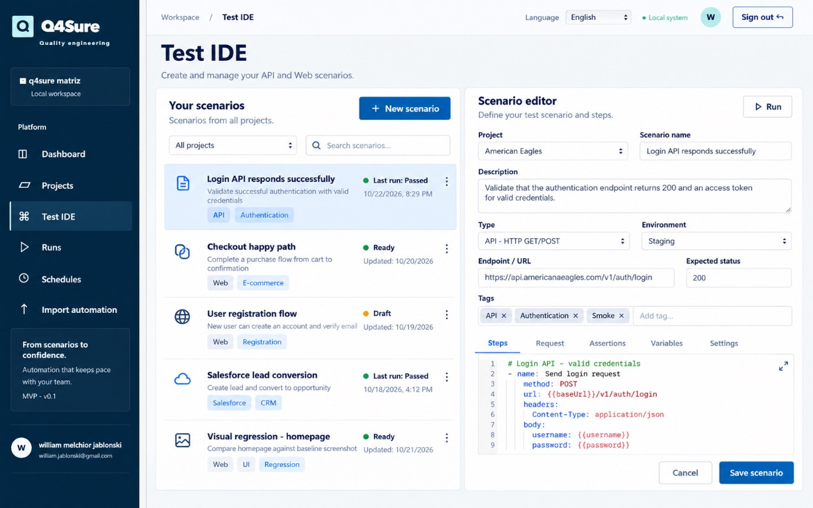

01 / CENÁRIOS
Crie e organize testes em um só fluxo
Estruture cenários de API e web, reúna etapas e mantenha as informações do teste próximas de quem precisa usá-las.
Q4Sure · Quality engineering
Reúna cenários, execuções e evidências de testes de API e aplicações web em uma plataforma feita para dar mais visibilidade ao seu processo de qualidade.

Uma visão conectada do seu ecossistema de testes
DA AUTOMAÇÃO À DECISÃO
Quando cenários, ferramentas e resultados ficam separados, entender o que está pronto para seguir pode dar trabalho. A Q4Sure aproxima essas informações em um fluxo de qualidade mais simples de acompanhar.
Veja o que você pode fazerUMA PLATAFORMA, DIFERENTES FLUXOS
Organize seus testes, acompanhe execuções e encontre evidências sem perder de vista o que cada equipe precisa validar.

Estruture cenários de API e web, reúna etapas e mantenha as informações do teste próximas de quem precisa usá-las.

Consulte o histórico de execuções e localize resultados e diagnósticos para investigar falhas com mais contexto.

Agrupe testes por projeto e acompanhe os fluxos que fazem parte do seu processo de qualidade.

Visualize projetos de automação e seus frameworks em uma interface criada para facilitar o acompanhamento.
UM FLUXO MAIS VISÍVEL
Uma sequência simples ajuda sua equipe a entender o que está sendo validado, o que aconteceu e onde encontrar os detalhes.
Explore a plataformaReúna projetos e cenários de teste por fluxo.
Acompanhe execuções e automações da sua rotina.
Consulte status, logs e evidências para decidir os próximos passos.
DÚVIDAS FREQUENTES
Uma visão rápida sobre os recursos mostrados nesta página.
As telas de referência mostram cenários de API e web, além de automações com ferramentas como Playwright e Robot Framework.
O dashboard e a área de execuções reúnem status, histórico e detalhes para ajudar a equipe a consultar os resultados.
Clique em “Solicitar demonstração” para abrir seu aplicativo de e-mail com uma mensagem endereçada a william.jablonski@gmail.com. Revise e envie a mensagem pelo próprio aplicativo.
Q4SURE · QUALITY ENGINEERING